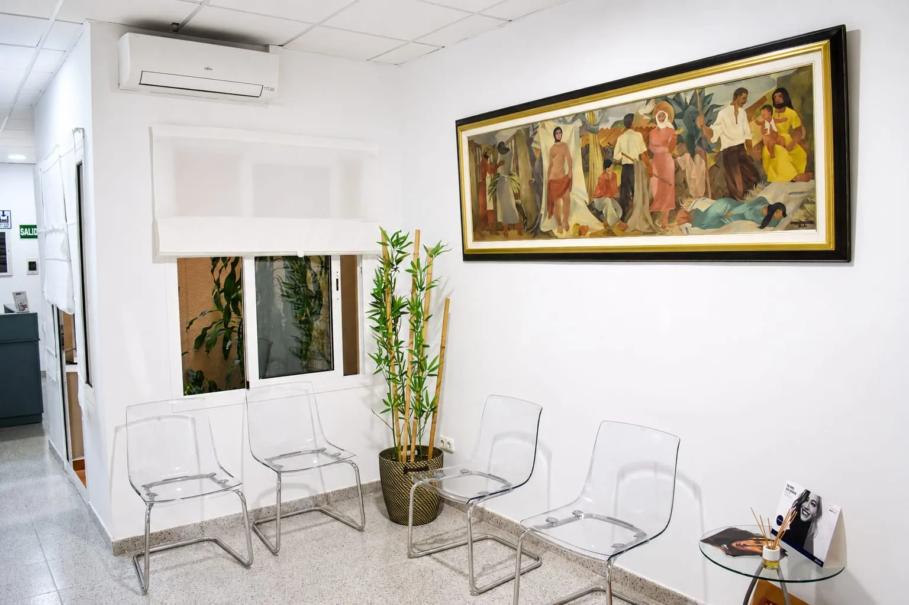
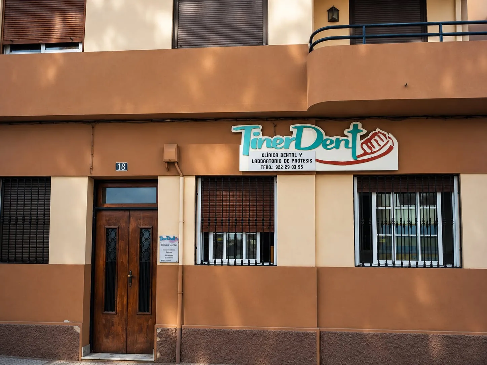

En Tinerdent combinamos odontología actual y un trato de tú a tú. Diagnósticos claros, tratamientos a tu medida y la tranquilidad de saber siempre qué se te va a hacer.
Vamos toda la familia a Clínica Dental Tinerdent, padres y niños, y no podemos estar más encantados. La atención es inmejorable: grandes profesionales, muchísima limpieza, cariño y un trato realmente personalizado.
Se nota que se preocupan por cada paciente y hacen que tanto los niños como los adultos nos sintamos tranquilos y cómodos. En nuestro caso, ¡han conseguido que se nos quite el miedo al dentista! 😊
100% recomendable, especialmente para familias. ❤️
A
AnaReseña de Google
He tenido una experiencia muy positiva con Tinerdent. Desde el primer momento transmiten cercanía, amabilidad y un trato muy humano. Lo que más valoro es su honestidad: te explican las cosas con claridad, y siempre buscan la mejor solución para ti. Se nota que se preocupan por el bienestar de sus pacientes. Sin duda, una clínica en la que puedes confiar. ¡La recomiendo!
S
SilvinaReseña de Google
Llevo años confiando en Fátima y no puedo estar más contenta. Destaco la profesionalidad, la atención cercana, la limpieza impecable y, sobre todo, el gran equipo humano. Siempre me he sentido muy bien atendida y en las mejores manos. Totalmente recomendable.
E
EduardoReseña de Google
Clínica con un trato exquisito para que el paciente se sienta cómodo y tranquilo. Grandes profesionales que te orientan siempre con las mejores opciones para la situación de cada cliente. Estás en las mejores manos.
M
MeliReseña de Google
¡Un servicio excelente! Fátima y María José son encantadoras, súper profesionales y atentas. Da gusto ir a sitios donde te tratan con tanta amabilidad y dedicación. Sin duda, un lugar 100% recomendable.
C
ClaudiaReseña de Google
El trato es magnífico, tanto la doctora como la auxiliar de dicha clínica son muy atentas y amables. Las explicaciones sobre los tratamientos son claras y legibles para todo el mundo (así no tengas conocimientos en odontología). El precio es excelente, un 10. Lo recomiendo 100%.
R
RocíoReseña de Google
¡Súper recomendado! El trato de Fátima y María José no puede ser más cercano y humano. Te lo explican todo muy bien, con una paciencia increíble y transmitiendo mucha tranquilidad desde el primer minuto. Ir al dentista con profesionales así da gusto, ¡mi clínica de confianza sin duda!
N
NataliaReseña de Google
Vamos todos allí. Es la seguridad de saber que estás en las mejores manos. Fátima es muy buena profesional, y muy explícita en todo lo que hace, te da una confianza increíble. María José también lo es.
ImplantesEstética dentalEndodonciaFundas de zirconioEncíasBlanqueamientoPrótesisLimpiezaImplantesEstética dentalEndodonciaFundas de zirconioEncíasBlanqueamientoPrótesisLimpieza


Sobre Tinerdent
Una clínica de confianza, con el detalle de un estudio a medida.
Escuchamos primero. Después diagnosticamos, explicamos y solo entonces tratamos.
Clínica Dental Tinerdent es un espacio pensado para que te sientas cómodo desde que cruzas la puerta. Unimos en el mismo lugar la consulta y el laboratorio de prótesis, lo que nos permite cuidar cada fase de tu tratamiento sin intermediarios.
Atención personalizada
Cada caso se estudia de forma individual, sin prisas.
Laboratorio propio
Fundas y prótesis con control directo de ajuste y color.
Diagnóstico preciso
Radiología y equipamiento actual para decidir con datos.
Trato cercano
Un equipo que te acompaña en cada visita.
Clínica Dental TinerdentFátima Hernández Marrero
Tratamientos
Todo lo que tu sonrisa necesita, en un mismo lugar.
Desde la revisión y la limpieza hasta la rehabilitación completa con implantes y prótesis. Te proponemos solo lo que de verdad necesitas.
Estamos en C. de Pérez de Rozas, 18, 38004 Santa Cruz de Tenerife. Atendemos a pacientes de Santa Cruz y de toda la isla.
¿Cómo puedo pedir cita?
Puedes llamarnos al 922 290 395, escribirnos por WhatsApp desde cualquier botón de la web o pasar por la clínica en horario de atención.
¿La primera visita incluye radiografía y presupuesto?
Sí. En la primera valoración realizamos la radiografía necesaria y te entregamos un presupuesto personalizado y sin compromiso, explicándote cada opción.
¿Qué tratamientos dentales ofrecéis?
Implantes, endodoncia, fundas de porcelana y zirconio, tratamiento de encías, blanqueamiento, limpiezas, empastes, prótesis, cirugía, exodoncia y frenectomía.
¿Qué ventaja tiene contar con laboratorio de prótesis propio?
Permite un control directo sobre el ajuste, el color y los tiempos de tus fundas y prótesis, y una comunicación inmediata entre la clínica y el laboratorio.
Tu primera visita empieza con una conversación.
Radiografía y presupuesto personalizado sin compromiso. Te explicamos cada opción con calma.